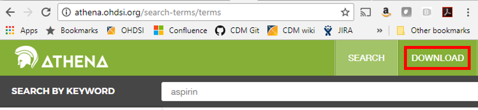
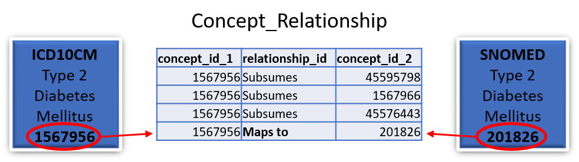
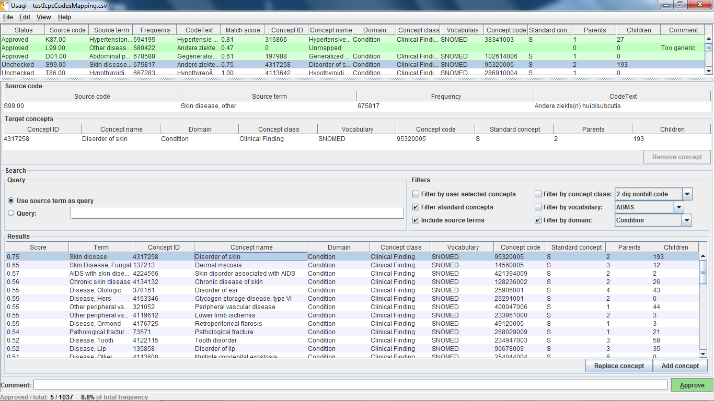
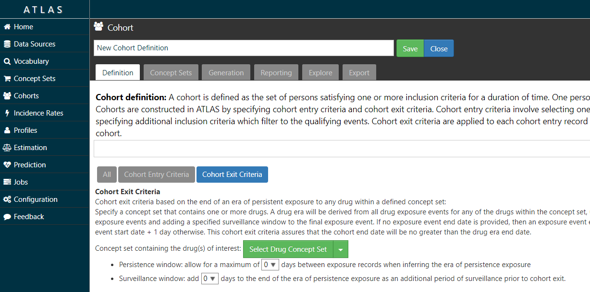
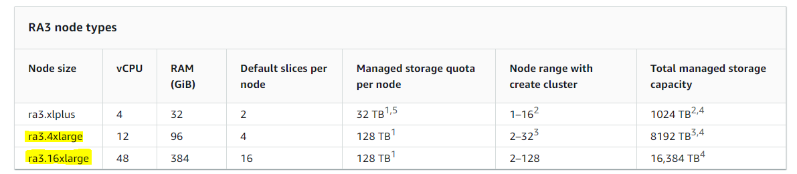

OMOP CDM Frequently Asked Questions
1. I understand that the common data model (CDM) is a way of organizing disparate data sources into the same relational database design, but how can it be effective since many databases use different coding schemes?
During the extract, transform, load (ETL) process of converting a data source into the OMOP common data model, we standardize the structure (e.g. tables, fields, data types), conventions (e.g. rules that govern how source data should be represented), and content (e.g. what common vocabularies are used to speak the same language across clinical domains). The common data model preserves all source data, including the original source vocabulary codes, but adds the standardized vocabularies to allow for network research across the entire OHDSI research community.
2. How does my data get transformed into the common data model?
You or someone in your organization will need to create a process to build your CDM. Don’t worry though, you are not alone! The open nature of the community means that much of the code that other participants have written to transform their own data is available for you to use. If you have a data license for a large administrative claims database like IBM MarketScan® or Optum’s Clinformatics® Extended Data Mart, chances are that someone has already done the legwork. Here is one example of a full builder freely available on github that has been written for a variety of data sources.
The community forums are also a great place to ask questions if you are stuck or need guidance on how to represent your data in the common data model. Members are usually very responsive!
3. Are any tables or fields optional?
It is expected that all tables will be present in a CDM though it is not a requirement that they are all populated. The three mandatory tables are:
- Person: Contains records that uniquely identify each patient in the source data who is at-risk to have clinical observations recorded within the source systems.
- Observation_period: Contains records which uniquely define the spans of time for which a Person is at-risk to have clinical events recorded within the source systems.
- CDM_Source: Contains information on the CDM instance including the vocabulary version used, the date the native data were released and the date the CDM was released.
It is then up to you which tables to populate, though the core event tables are generally agreed upon to be Condition_occurrence, Procedure_occurrence, Drug_exposure, Measurement, and Observation. Each table has certain required fields, a full list of which can be found on the Common Data Model wiki page.
4. Does the data model include any derived information? Which tables or values are derived?
The common data model stores verbatim data from the source across various clinical domains, such as records for conditions, drugs, procedures, and measurements. In addition, to assist the analyst, the common data model also provides some derived tables, based on commonly used analytic procedures. For example, the Condition_era table is derived from the Condition_occurrence table and both the Drug_era and Dose_era tables are derived from the Drug_exposure table. An era is defined as a span of time when a patient is assumed to have a given condition or exposure to a particular active ingredient. Members of the community have written code to create these tables and it is out on the github if you choose to use it in your CDM build. It is important to reinforce, the analyst has the opportunity, but not the obligation, to use any of the derived tables and all of the source data is still available for direct use if the analysis calls for different assumptions.
5. How is age captured in the model?
Year_of_birth, month_of_birth, day_of_birth and birth_datetime are all fields in the Person table designed to capture some form of date of birth. While only year_of_birth is required, these fields allow for maximum flexibility over a wide range of data sources.
6. How are gender, race, and ethnicity captured in the model? Are they coded using values a human reader can understand?
Standard Concepts are used to denote all clinical entities throughout the OMOP common data model, including gender, race, and ethnicity. Source values are mapped to Standard Concepts during the extract, transform, load (ETL) process of converting a database to the OMOP Common Data Model. These are then stored in the Gender_concept_id, Race_concept_id and Ethnicity_concept_id fields in the Person table. Because the standard concepts span across all clinical domains, and in keeping with Cimino’s ‘Desiderata for Controlled Medical Vocabularies in the Twenty-First Century’, the identifiers are unique, persistent nonsematic identifiers. Gender, for example, is stored as either 8532 (female) or 8507 (male) in gender_concept_id while the original value from the source is stored in gender_source_value (M, male, F, etc).
7. Are there conditions/procedures/drugs or other domains that should be masked or hidden in the CDM?
The masking of information related to a person is dependent on the organization’s privacy policies and may vary by data asset (THEMIS issue #21).
8. How is time-varying patient information such as location of residence addressed in the model?
The OMOP common data model has been pragmatically defined based on the desired analytic use cases of the community, as well as the available types of data that community members have access to. Prior to CDM v6.0, each person record had associated demographic attributes which are assumed to be constant for the patient throughout the course of their periods of observation, like location and primary care provider. With the release of CDM v6.0, the Location_History table is now available to track the movements of people, care sites, and providers over time. Only the most recent location_id should be stored in the Person table to eliminate duplication, while the person’s movements are stored in Location_History.
Something like marital status is a little different as it is considered to be an observation rather than a demographic attribute. This means that it is housed in the Observation table rather than the Person table, giving the opportunity to store each change in status as a unique record.
If someone in the community had a use case for time-varying location of residence and also had source data that contains this information, we’d welcome participation in the CDM workgroup to evolve the model further.
9. How does the model denote the time period during which a Person’s information is valid?
The OMOP Common Data Model uses something called observation periods (stored in the Observation_period table) as a way to define the time span during which a patient is at-risk to have a clinical event recorded. In administrative claims databases, for example, these observation periods are often analogous to the notion of ‘enrollment’.
10. How does the model capture start and stop dates for insurance coverage? What if a person’s coverage changes?
The Payer_plan_period table captures details of the period of time that a Person is continuously enrolled under a specific health Plan benefit structure from a given Payer. Payer plan periods, as opposed to observation periods, can overlap so as to denote the time when a Person is enrolled in multiple plans at the same time such as Medicare Part A and Medicare Part D.
11. What if I have EHR data? How would I create observation periods?
An observation period is considered as the time at which a patient is at-risk to have a clinical event recorded in the source system. Determining the appropriate observation period for each source data can vary, depending on what information the source contains. If a source does not provide information about a patient’s entry or exit from a system, then reasonable heuristics need to be developed and applied within the ETL.
Vocabulary Mapping
12. Do I have to map my source codes to Standard Concepts myself? Are there vocabulary mappings that already exist for me to leverage?
If your data use any of the 55 source vocabularies that are currently supported, the mappings have been done for you. The full list is available from the open-source ATHENA tool under the download tab (see below). You can choose to download the ten vocabulary tables from there as well – you will need a copy in your environment if you plan on building a CDM.

The ATHENA tool also allows you to explore the vocabulary before downloading it if you are curious about the mappings or if you have a specific code in mind and would like to know which standard concept it is associated with; just click on the search tab and type in a keyword to begin searching.
13. If I want to apply the mappings myself, can I do so? Are they transparent to all users?
Yes, all mappings are available in the Concept_relationship table (which can be downloaded from ATHENA). Each value in a supported source terminology is assigned a Concept_id (which is considered non-standard). Each Source_concept_id will have a mapping to a Standard_concept_id. For example:

In this case the standard SNOMED concept 201826 for type 2 diabetes mellitus would be stored in the Condition_occurrence table as the Condition_concept_id and the ICD10CM concept 1567956 for type 2 diabetes mellitus would be stored as the Condition_source_concept_id.
14. Can RXNorm codes be stored in the model? Can I store multiple levels if I so choose? What if one collaborator uses a different level of RXNorm than I use when transforming their database?
In the OMOP Common Data Model RXNorm is considered the standard vocabulary for representing drug exposures. One of the great things about the Standardized Vocabulary is that the hierarchical nature of RXNorm is preserved to enable efficient querying. It is agreed upon best practice to store the lowest level RXNorm available and then use the Vocabulary to explore any pertinent relationships. Drug ingredients are the highest-level ancestors so a query for the descendants of an ingredient should turn up all drug products (Clinical Drug or Branded Drug) containing that ingredient. A query designed in this way will find drugs of interest in any CDM regardless of the level of RXNorm used.
15. What if the vocabulary has a mapping I don’t agree with? Can it be changed?
Yes, that is the beauty of the community! If you find a mapping in the vocabulary that doesn’t seem to belong or that you think could be better, feel free to write a note on the forums or on the vocabulary github. If the community agrees with your assessment it will be addressed in the next vocabulary version.
16. What if I have source codes that are specific to my site? How would these be mapped?
In the OMOP Vocabulary there is an empty table called the Source_to_concept_map. It is a simple table structure that allows you to establish mapping(s) for each source code with a standard concept in the OMOP Vocabulary (TARGET_CONCEPT_ID). This work can be facilitated by the OHDSI tool Usagi (pictured below) which searches for text similarity between your source code descriptions and the OMOP Vocabulary and exports mappings in a SOURCE_TO_CONCEPT_MAP table structure. Example Source_to_concept_map files can be found here. These generated Source_to_concept_map files are then loaded into the OMOP Vocabulary’s empty Source_to_concept_map prior to processing the native data into the CDM so that the CDM builder can use them in a build.

If an source code is not supported by the OMOP Vocabulary, one can create a new records in the CONCEPT table, however the CONCEPT_IDs should start >2000000000 so that it is easy to tell between the OMOP Vocabulary concepts and the site specific concepts. Once those concepts exist CONCEPT_RELATIONSHIPS can be generated to assign them to a standard terminologies, USAGI can facilitate this process as well (THEMIS issue #22).
17. How are one-to-many mappings applied?
If one source code maps to two Standard Concepts then two rows are stored in the corresponding clinical event table.
18. What if I want to keep my original data as well as the mapped values? Is there a way for me to do that?
Yes! Source values and Source Concepts are fully maintained within the OMOP Common Data Model. A Source Concept represents the code in the source data. Each Source Concept is mapped to one or more Standard Concepts during the ETL process and both are stored in the corresponding clinical event table. If no mapping is available, the Standard Concept with the concept_id = 0 is written into the *_concept_id field (Condition_concept_id, Procedure_concept_id, etc.) so as to preserve the record from the native data.
Common Data Model Versioning
19. Who decides when and how to change the data model?
The community! There is a working group designed around updating the model and everything is done by consensus. Members submit proposed changes to the github in the form of issues and the group meets once a month to discuss and vote on the changes. Any ratified proposals are then added to the queue for a future version of the Common Data Model.
20. Are changes to the model backwards compatible?
Generally point version changes (5.1 -> 5.2) are backwards compatible and major version changes (4.0 -> 5.0) may not be. All updates to the model are listed in the release notes for each version and anything that could potentially affect backwards compatibility is clearly labeled.
21. How frequently does the model change?
The current schedule is for major versions to be released every year and point versions to be release every quarter though that is subject to the needs of the community.
22. What is the dissemination plan for changes?
Changes are first listed in the release notes on the github and in the common data model wiki. New versions are also announced on the weekly community calls and on the community forums.
OHDSI Tools
23. What are the currently available analytic tools?
While there are a variety of tools freely available from the community, these are the most widely used:
- ACHILLES – a stand-alone tool for database characterization
- ATLAS - an integrated platform for vocabulary exploration, cohort definition, case review, clinical characterization, incidence estimation, population-level effect estimation design, and patient-level prediction design (link to github)
- ARACHNE – a tool to facilitate distributed network analyses
- WhiteRabbit - an application that can be used to analyse the structure and contents of a database as preparation for designing an ETL
- RabbitInAHat - an application for interactive design of an ETL to the OMOP Common Data Model with the help of the the scan report generated by White Rabbit
- Usagi - an application to help create mappings between coding systems and the Vocabulary standard concepts.
24. Who is responsible for updating the tools to account for data model changes, bugs, and errors?
The community! All the tools are open source meaning that anyone can submit an issue they have found, offer suggestions, and write code to fix the problem.
25. Do the current tools allow a user to define a treatment gap (persistence window) of any value when creating treatment episodes?
Yes – the ATLAS tool allows you to specify a persistence window between drug exposures when defining a cohort (see image below).

26. Can the current tools identify medication use during pregnancy?
Yes, you can identify pregnancy markers from various clinical domains, including conditions and procedures, for example ‘live birth’, and then define temporal logic to look for drug exposure records in some interval prior to the pregnancy end. In addition, members of the community have built an advanced logic to define pregnancy episodes with all pregnancy outcomes represented, which can be useful for this type of research.
27. Do the current tools execute against the mapped values or source values?
The tools can execute against both source and mapped values, though mapped values are strongly encouraged. Since one of the aims of OHDSI is to create a distributed data network across the world on which to run research studies, the use of source values fails to take advantage of the benefits of the Common Data Model.
Network Research Studies
28. Who can generate requests?
Anyone in the community! Any question that gains enough interest and participation can be a network research study.
29. Who will develop the queries to distribute to the network?
Typically a principal investigator leads the development of a protocol. The PI may also lead the development of the analysis procedure corresponding to the protocol. If the PI does not have the technical skills required to write the analysis procedure that implements the protocol, someone in the community can help them put it together.
30. What language are the queries written in?
Queries are written in R and SQL. The SqlRender package can translate any query written in a templated SQL Server-like dialect to any of the supported RDBMS environments, including Postgresql, Oracle, Redshift, Parallel Data Warehouse, Hadoop Impala, Google BigQuery, and Netezza.
31. How do the queries get to the data partners and how are they run once there?
OHDSI runs as a distributed data network. All analyses are publicly available and can be downloaded to run at each site. The packages can be run locally and, at the data partner’s discretion, aggregate results can be shared with the study coordinator.
Data partners can also make use of one of OHDSI’s open-source tools called ARACHNE, a tool to facilitate distributed network analytics against the OMOP CDM.
Recommended System Requirements
It is difficult to recommend what technical capabilities a site needs to set up an ETL because it is heavily dependent on the amount of data they have and how they plan to use it. Here are some examples of options that have worked well for small to medium organizations and large organizations:
Small-to-Medium Organization
- CDM size is 100MB to several GBs
- Vocab ~20GB
- Results < 500 MB
- Recommend
- Server class machine disk >= 250GB (SSD preferred), >= 4 cores, >= 32GB RAM
Large Organization
- CDM size is 12GB to several TBs
- Vocab ~20GB
- Results < 500 MB
- Recommend
- Cloud-based infrastructure like multiple AWS Redshift clusters, for example:
